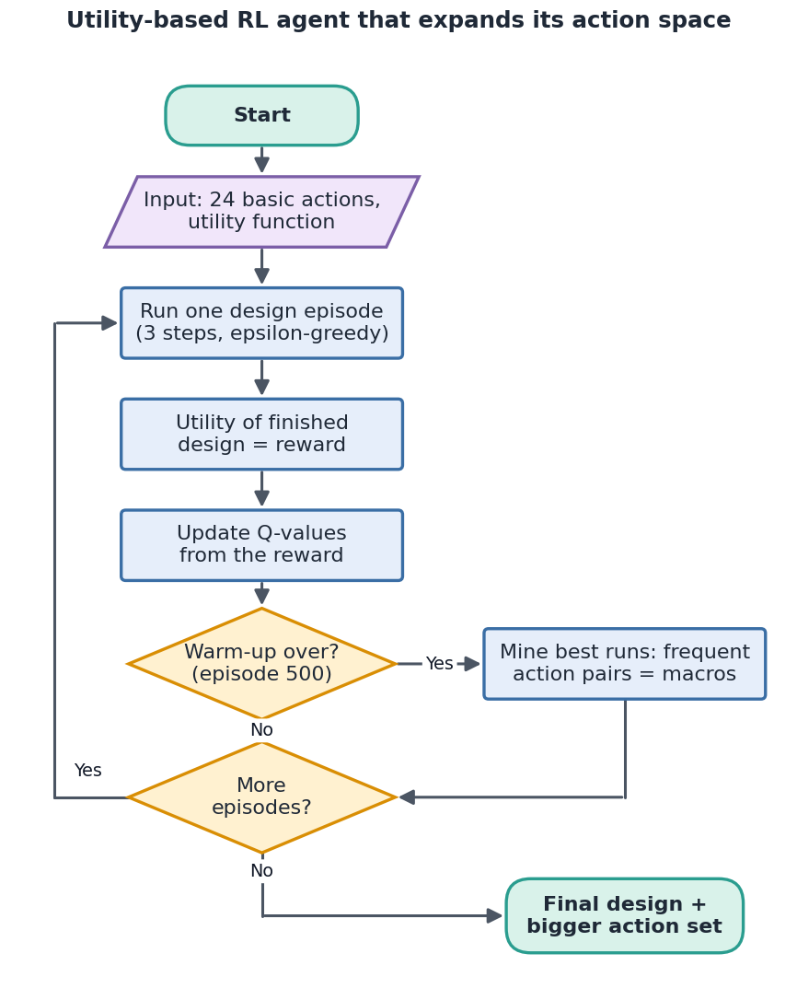
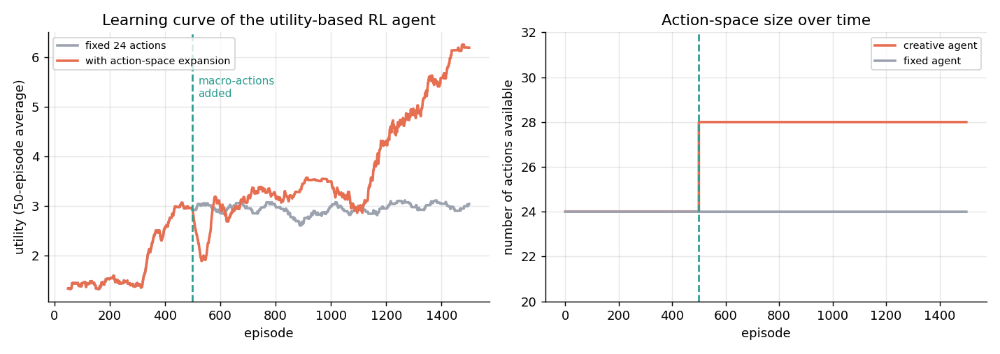
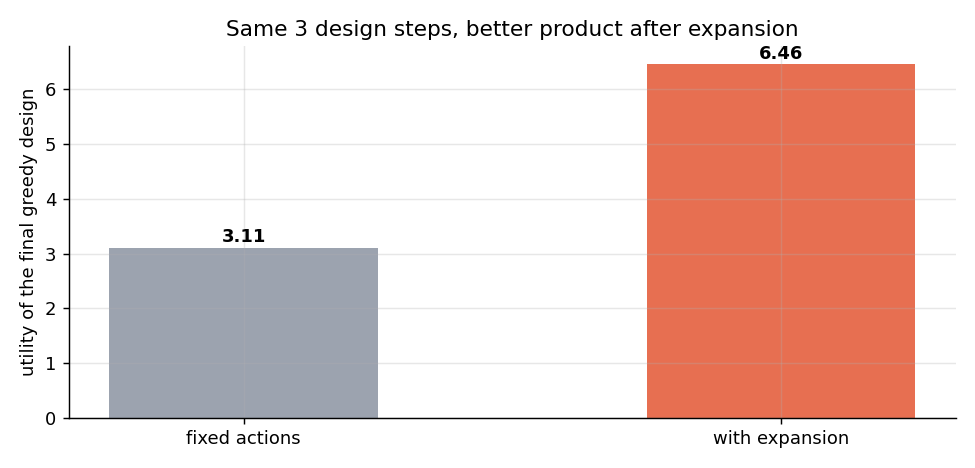
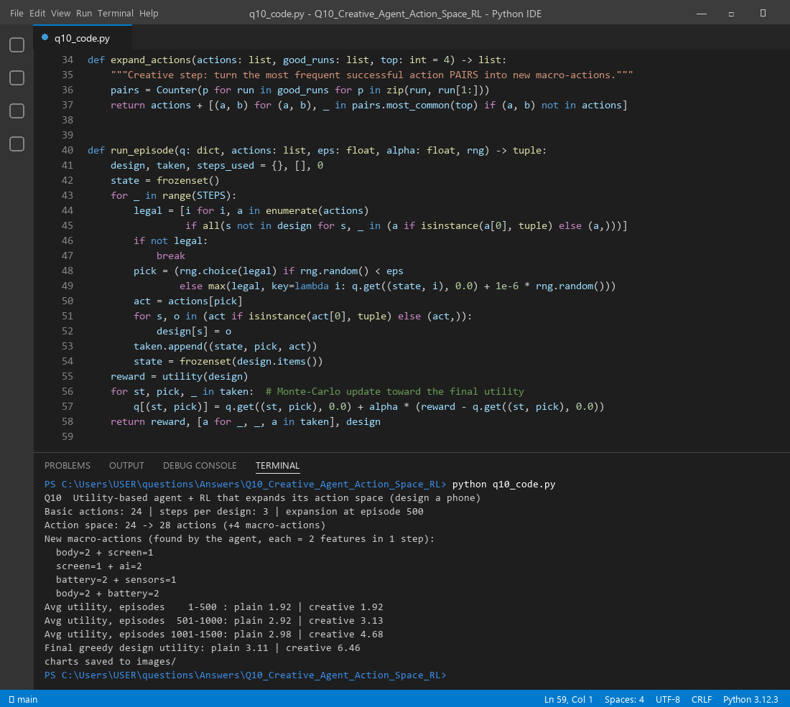

An intelligent agent is very good at reaching a goal with the moves it already has. A creative agent also asks: "Do I have the right moves at all?" If the answer is no, it invents new moves. In product design this means the agent does not only pick features one by one. It notices which feature pairs work well together and turns each pair into a single new action. The agent's action space grows, so the space of designs it can reach grows too.
| Intelligent agent | Creative agent | |
|---|---|---|
| Aim | Rational: maximise the performance measure | Rational but non-obvious: also novel and useful |
| Structure | Agent = architecture + program | + creativity calibrator and conceptual space expander |
| PEAS | Fixed P, E, A, S | Asks "what could be different?" for P, E, A and S |
| Actions | Fixed action set | Creates new actions (exploration, analogy, combination) |
| Learning | Improves its policy | The learn set evolves, so the algorithm evolves, so the outcome evolves |
| Intelligent search | Creative search | |
|---|---|---|
| Space | Search the given space efficiently | Create, discover or invent new options |
| Neighbours | Fixed neighbour definition | Redefines the neighbour |
| Nodes | Expands existing nodes | Combines two or more nodes (merging states) |
| Actions | Uses the action set as given | Creates new sets of actions |
| Goal | Fixed goal test | Goals may change (dynamic goals) |
| Result | Obvious best answer | Useful, surprising choices |
The idea: look at the best designs built so far and find action pairs that keep appearing. Each pair becomes a new macro-action that sets two slots in one step. With 3 steps, the agent can now fill up to 6 slots, so designs that were unreachable become reachable.
function expand(actions A, best_runs R):
pairs ← count every consecutive pair (ai, ai+1) in the top runs R
for each pair (a, b) among the top-k most frequent:
if (a, b) not in A: A.add( macro(a, b) ) # new action = a then b in one step
return A # bigger action space, bigger search space
function CreativeRL(A, episodes, warmup):
for ep = 1 to episodes:
if ep = warmup + 1: A ← expand(A, top 60 runs); reset Q
design ← run epsilon-greedy episode using actions in A
reward ← utility(design)
update Q(state, action) toward reward
return Q, A

The agent found these four macro-actions, which raised the action space from 24 to 28:
| New macro-action | Is it a hidden synergy? |
|---|---|
| body = 2 + screen = 1 | Yes (bonus +2.0) |
| battery = 2 + sensors = 1 | Yes (bonus +2.5) |
| screen = 1 + ai = 2 | No, a lucky pair |
| body = 2 + battery = 2 | No, a lucky pair |
Two of the four were real synergies the agent had never been told about. Utility before and after the expansion:
| Episodes | Fixed 24 actions | With expansion |
|---|---|---|
| 1–500 (same for both) | 1.92 | 1.92 |
| 501–1000 | 2.92 | 3.13 |
| 1001–1500 | 2.98 | 4.68 |
| Final greedy design | 3.11 | 6.46 |
The fixed agent stalls near 3 because three single-feature steps cannot reach the synergies. The creative agent ends about 2 times higher (6.46 vs 3.11) with the same three steps. Note the short dip just after episode 500 in Figure 2: we clear the Q-table when the actions change, so the agent has to relearn. The extra learning cost pays off later.


| Option | What it does | Product design example |
|---|---|---|
| Macro-actions (options) | Turn frequent successful sequences into one action. Used in our run. | "Fold-able body + flexible screen" as one step |
| Parameterised actions | Make an action continuous instead of a fixed choice | Battery size from 3,000 to 6,000 mAh |
| Analogy / transfer | Copy actions that worked in another domain | Camera stabiliser ideas from drones |
| Human co-creator | A designer suggests a new action; the agent tests it | "Add a solar back panel" |
| Curiosity reward | Give extra reward for reaching new, unseen states | Tries rarely used feature mixes |
| GA over action sequences | Evolve sequences with crossover and mutation, keep the fittest as new actions | Mix two good build orders |
| New sensor / modality (IoT) | A new sensor adds a dimension to the space | Add a gas or health sensor slot |
q10_code.py trains both agents, mines the macro-actions and saves the charts.

expand_actions() and run_episode() functions with the real terminal output.Files in this folder: q10_code.py (source), q10_code.ipynb (Colab/Jupyter version, already run),
q10_output.txt (console output), images/ (all figures).